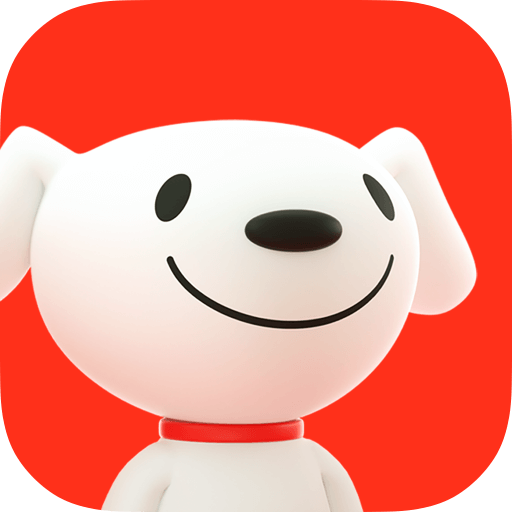
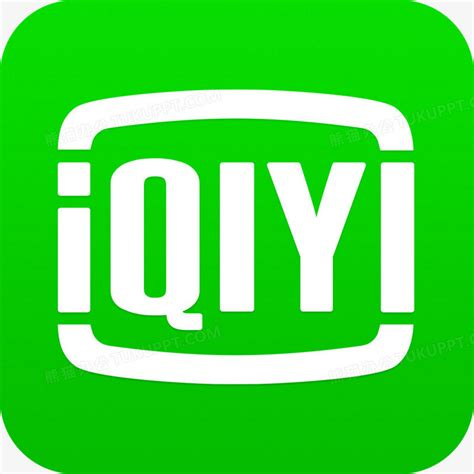
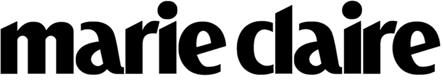

Portfolio/Work Experience/2026
My Experience
AI 产品经理 · 内容运营 · 实习经历
实习经历
4 段实习经历 · 展开查看主要职责与实习细节，或点击「查看详细」

京东
AI 产品经理 · 2026.06 - 2026.08
›
主要职责
负责本地生活场景下的在线对话式AI客服与语音通话AI客服的产品建设与迭代优化
Agent能力建设
针对Prompt优化边际收益递减问题，设计金牌客服Skill蒸馏方案，Skill上线后累计转人工率降低2.03pp；同步推进知识挖掘与自动归因，迭代Prompt与知识库，推动转人工率分别降低2.80pp、1.67pp。
语音Agent评测
从0到1搭建语音Agent质量评测体系，建立Badcase标注框架，利用大模型完成数据解析、自动标注、结果校验及可视化报告生成；定位播报拼接、反问复读、重复索参等高频问题，并推动满意度度量体系落地。
数据分析与需求设计
基于Agent会话、业务指标及人工客服会话数据开展定量/定性分析，通过指标异常、用户行为及Badcase聚类定位需求核心问题，以数据验证需求价值并支撑订单列表、Agent意图框架、语音Agent满意度等方案设计，形成完整产品闭环。
AI工作提效
将vibe coding融入数据分析与产品工作流，开发自动提数Skill、数据监测看板、语音Badcase标注工具等；累计产出7份A/B实验报告、3版自动归因报告、2份知识挖掘报告。

腾讯
AI 产品经理 · 2026.03 - 2026.06
›
主要职责
负责混元多模态模型语音方向（ASR、TTS）的模型评测与自动化评测探索
设计自动化Agent
针对传统人工归因成本高、LLM单轮多任务导致准确率不足的挑战，设计自动归因Agent方案，实现ASR语音标注自动化预处理，评测周期缩短50%，实现评测数据的自动化预处理。
优化ASR评测框架
针对原有评测无法覆盖复杂上下文场景、错误权重失真的痛点，重构ASR评测框架，优化ASR评测框架，建立多维度、可量化的分级评测体系。使原本无法判定的案例中超90%得到有效判断，评测覆盖率大幅提升。
TTS竞品评测
设计TTS竞品评测方案，覆盖多维度音质与表现力评估，建立可复用的竞品评测方案。
制定评测方案
深度参与ASR、TTS语音数据集的精细化评测方案制定，管理数据标注任务与培训数据标注人力。

爱奇艺
AI 产品经理 · 2025.09 - 2026.01
›
主要职责
负责针对电影、电视剧、综艺进行二创的AI剪辑、创作工具的产品建设与迭代优化
设计自动生产工作流
针对海外短剧短视频创作高度依赖人工、原有产线片段跳跃的痛点，规划多套AI自动化创作工作流，通过对齐底层数据结构并设计异常处理与降级兜底策略，推动工作流成功上线，实现素材的规模化自动生产，核心指标增长87%。
建设解说视频Agent
为了解决AI视频生成稳定性不足、人工协同编辑效率低的痛点，独立完成了影视解说视频的生产Agent规划与生产后字幕画布与分镜级编辑功能，赋予了AIGC视频一站式可控操作体验，实现产出视频日均播放量增长93%，万赞视频数增长82%。
应用与设计RAG
针对爆款视频高度依赖人工经验复刻、缺乏沉淀的局限，主导爆文剪辑模板知识库设计，多维构建可扩展字段体系，规划"向量+标量"混合检索方案以解决检索不准确问题，并通过去重及优质模板回流机制精简结构；针对影视剧混剪中常出现镜头片段跳跃、关键情节缺失的问题，明确三层级边界规则并构建事件知识库，通过设计自动化入库流程与镜头所属事件精准判断。
团队协作
与投放团队、内容团队、技术团队协作沟通，推动产品在实际用户场景中的可用性与稳定性提升。

嘉人 Marie Claire
内容运营 · 2025.05 - 2025.08
›
主要职责
负责嘉人小红书官方账号和附属宠物账号的运营与内容创作
提升账号涨粉效率
负责嘉人小红书官方账号和附属宠物账号运营，使用AIGC进行内容相关创作，运营期间实现官方账号涨粉4w+。从0到1搭建附属宠物账号，通过AI内容制作实现粉丝1000+。
热点视频创意策划
独立承担视频创意方案策划、拍摄执行与传播内容设计，确保品牌调性与用户兴趣结合，结合热点话题进行节奏化传播，单次活动视频阅读量超百万，小红书热点榜单持续上榜48h，热度最高top4，单条活动视频在小红书收获5w+点赞。
内容创作
独立完成小红书账号的视频内容与图文内容创作以及每周公众号时尚资讯推文编写，提高阅读量和用户粘性。
项目经历
9 个项目 · 每个项目含流程图可视化与背景/目标/行动/结果完整说明
嘉人开麦 × Omega品牌活动创意策划
嘉人 · 内容运营
2w+ 点赞
背景需要为品牌客户打造一档全新的商业化栏目IP，以突破传统的营销方式，提升用户粘性。
目标从0到1策划并开创「嘉人开麦」新栏目，负责其策划、视觉定位的设定，并完成首期的落地。
行动- 玩法与规则设计：设计了栏目的基本形式、互动规则和视觉风格，并撰写策划案，向团队和品牌方提案并获得通过。
- 上线与效果监控：栏目上线后，监控首发视频的核心数据，分析用户互动评论，评估栏目初期表现。
结果新栏目首发视频即收获2w+点赞，实现"开门红"，成功为品牌开辟了新的内容阵地。
背景参与馥绿德雅品牌洗护发产品的商业直播项目，目标是提升直播观看人数、用户停留时长。
目标进行竞品分析并参与直播脚本与互动环节的设计，以优化流量转化效率。
行动- 竞品分析：我横向分析了Vogue、芭莎等竞对的直播活动，从福利设置、互动节奏、主播话术等维度进行对比，输出分析报告。
- 策略制定：基于分析结论，我提议优化抽奖环节的触发机制（评论关键词），并设计了关于产品功效的问答互动脚本，以提升用户停留时长。
- 数据支持：我梳理了品牌方提供的用户画像数据与产品评论，提炼出用户对"提升色泽功效"的核心关注点，并将其融入明星嘉宾的话术设计中。
结果我提出的优化方案被采纳并实施，直播观看人数达2w+，活动圆满完成。
赵今麦 × MIUMIU品牌活动创意宣传策划与执行
嘉人 · 内容运营
5w+ 点赞
背景独立负责明星赵今麦与MIUMIU品牌合作活动的线上内容策划与传播，目标是提升品牌在小红书平台的曝光量与正面口碑。
目标策划创意视频内容、安排发布节奏，并对最终传播效果进行复盘。
行动- 内容策划与执行：我分析了小红书平台的热点趋势和MIUMIU的品牌调性，策划了"ABB"的主题视频，独立完成拍摄协调与剪辑。
- 发布策略：我制定了分时段、带热门话题的发布策略，并在发布后持续监控评论区舆情。
- 效果复盘：活动结束后，我使用Excel对视频的播放量、点赞率、分享数等数据进行了多维度复盘，分析了爆款因素。
结果该条视频成为爆款，最终收获5w+点赞，曝光量超百万，远超预期目标。
短剧广告自动化素材生产AI工作流
爱奇艺 · AI 产品
CTR +197%
背景海外短剧在海外平台的买量素材高度依赖人工剪辑，生产成本高，且难以规模化产出与复刻创意，原有产线产出视频片段跳跃、不连贯；单集所包含内容会有多个剧情线或场景的情况出现，业务侧缺乏可有效的、自动化生产短剧广告投放素材的工作流。
目标从产品视角梳理海外高转化短剧素材的共性规律，为海外短剧业务设计自动化生产功能，搭建可规模化自动生产的AI工作流。
行动- 系统调研海外短视频平台近半年高曝光、高下载的短剧素材，分析素材结构、叙事方式与钩子设计，总结高复用的视频结构。
- 提出以「事件」为核心的剪辑创作模式，将零散剧情抽象为完整、有因果关系的结构化事件单元，以此搭建了事件知识库。
- 规划多套AI创作工作流，覆盖用户意图解析、事件检索、钩子识别、片段拼接、多语言字幕生成等关键环节。
- 撰写PRD文档进行评审后，与开发的同学沟通工作流细节与逻辑，成功搭建了两条工作流并进行测试评估，推出上线使用。
结果有效提升了海外商业化内容投放质量，投放首周核心指标增长87%，CTR增长197%。
影视剧二创短视频创作Agent
爱奇艺 · 2025.12 - 2026.01
播放 +93%
背景在影视剧二创短视频的内容生产中，自动化创作的多条产线入口分散，且不支持视频编辑，对于需要精细优化的视频无法支持用户手动编辑调整。
目标搭建可编辑的影视剧解说类创作子Agent，实现从解说生成到视频拼接的自动化流程，同时保证生成内容在质量上的可控性，满足用户的编辑需求。
行动- 负责解说Agent的产品方案设计，通过Agent实现解说内容的智能化生产
- 提出以爆文衍生的方式进行解说类视频创作
- 主导P0需求拆解与PRD撰写，包括Agent搭建以及解说字幕画布、分镜编辑能力，以及语音重生成后的视频时长自适应方案
- 协同前后端规划音色调整、语音时长提示与预览交互，提升创作内容的可控性与可用性
结果有效提升了运营团队的生产效率与生产质量，业务方发布数量提升27%，日均播放量增长93%，万赞视频数增长82%。
ASR自动归因Agent建设
腾讯 · 2026.03
周期 -50%
背景现有ASR错误归因依赖传统人工逐条标注，评测周期长、样本规模受限，无法支撑模型快速迭代需求。
目标构建面向ASR评测场景的自动化归因工具，实现对批量评测数据的自动化处理，压缩评测周期，降低评测人力消耗。
行动- 设计「规则过滤+自动归因」架构，将确定性任务（文本规范化、差异检测、规则前置过滤、输出装配）交由纯代码实现。
- 拆分Stage1错误判定、Stage2句意影响、Stage3错误归因、Stage4关联性判定为4层prompt。
- 建立规则前置过滤层，通过固定规则拦截25%–40%的无需标注类型。
- 设计人工平台人机协同校验方案。
结果同人力条件下评测周期缩短50%，实现评测数据的自动化预处理。
背景原有ASR评测采用单维度粗粒度评估，评测体系无法覆盖复杂场景下的问题标注导致53%的case无法有效判定模型优劣。
目标优化ASR评测框架，建立多维度、可量化的分级评测体系，提升评测覆盖率与诊断深度，为算法迭代提供精准的方向性指引。
行动- 引入上下文信息这一评估维度。
- 建立四级句意影响等级，三级格式影响等级。
- 制定ASR Badcase问题归因标注规则，包括10类根因体系（噪声干扰、多人重叠、头/尾丢音等）。
- 支持按维度独立统计分析。
结果使原本无法判定的案例中超90%得到有效判断，评测覆盖率大幅提升；形成可量化的严重程度分级机制，为算法优化提供了更清晰的优先级。
金牌客服决策蒸馏与Agent Skill建设
京东 · 2026.08
转人工 -2.03pp
背景在持续Prompt优化后，部分Agent问题已由语言表达和意图理解转向复杂业务场景下的决策能力问题，传统 Prompt 调优边际收益下降；同时，优秀人工客服拥有大量尚未结构化沉淀的业务决策经验。
目标将金牌客服的隐性业务经验转化为Agent可执行的Skill，使Agent不仅学习客服的回复话术，还能够学习其决策逻辑和判断风格。
行动- 设计"通识蒸馏+环境适配"的Skill蒸馏方案，在与 Agent 相同的上下文、工具及能力约束下采集金牌客服回复；
- 利用大模型从专家回复中提取Work（工作决策逻辑）+ Persona（判断风格），形成结构化 Skill；
- 通过多轮迭代将Skill注入线上Agent Prompt，通过A/B实验验证实际效果。
结果上线Skill的售中和售后Agent转人工率分别降低2.03pp和1.19pp，验证了项目的可行性，并沉淀了可复用的Agent Skill蒸馏方法。
家政Agent知识挖掘
京东 · 2026.07 - 2026.08
转人工 -2.80pp
背景家政业务经常拓展新的业务，Agent在新业务场景中存在知识覆盖不足问题，缺乏一个快速搭建新业务Agent的途径来解决用户进线自咨询新业务的问题。
目标从人工客服真实对话中挖掘Agent未覆盖的业务知识，建立"知识发现—筛选—注入—效果验证"的持续迭代机制，推动Agent知识体系自进化。
行动- 分析人工客服与用户真实对话，利用大模型识别Agent未覆盖知识点、高频问题及潜在知识缺口。
- 建立知识分类、过滤和有效性判断规则，将高价值知识反哺Agent Prompt知识体系。
- 通过A/B实验验证知识注入效果。
- 形成"知识发现—知识过滤—Agent注入—效果验证"的三层漏斗框架。
结果售前场景经过多轮知识挖掘后转人工率降低2.80pp；形成可复用的Agent知识挖掘方法论。
Portfolio/Vibe Coding/2026
Vibe Coding
用 AI 辅助编程把想法变成现实
我相信 vibe coding 不是「不用动脑」，而是把执行力的门槛降低，让想法可以快速验证。
从需求文档到可运行 demo，有时候只需要一个下午。
工作中：开发评测工具、自动化 Skill、数据看板，把重复劳动交给程序。
生活中：番茄钟、求职追踪、笔记助手，自己的问题自己解决。
工作场景
客服语音通话标注工具
独立开发，支持文本＋音频双模态标注，实现语音标注从纯人工到系统自动标注的跨越
ReactAudio API标注系统
ASR 自动标注及可视化系统
基于大模型驱动自动归因，评测周期从天级压缩至小时级，准确率和召回率均超 90%
LLM数据可视化自动化
自动提数 Skill 体系
自动提数 Skill · 客服数据埋点串表 Skill · 数据波动分析 Skill · 场景意图形成 Skill · 评测报告产出 Skill，将高频工作流自动化
Skill 工程自动化Agent
生活场景
番茄钟专注 App
为个人高效学习开发的专注计时应用，支持任务管理和专注数据统计
React本地存储效率工具
秋招进度监控网站
实时追踪秋招投递进度与反馈状态，支持多维筛选与可视化展示
数据可视化状态管理
小红书笔记智能收藏
基于 AI 的笔记自动分类与语义检索功能，解决「收藏了但找不到」的问题
LLM向量检索浏览器插件
这个作品集网站
用 Figma Make + vibe coding 构建的交互式作品集，包含 macOS 风格 UI 和多页面导航
ReactFigma MakeVibe Coding
Portfolio/Interests/Photography
Photography
用镜头记录生活 · 9 frames
PHOTOGRAPHY · 光影记录
用镜头观察世界
摄影是我观察世界的方式。每一帧都是一次专注的凝视，把流动的瞬间凝固成可被反复回味的画面。